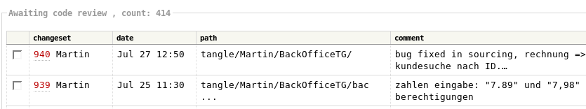

版本管理 项目管理 知识管理 导入浅谈
概要
- 版本?到底什么是版本?
- 管理!CVS vs SVN
- Trac!轻型集成项目管理环境
什么是"版"?
- 中所述
- 《说文解字》:
- 《说文通训定声》:
- 最早是动词，后来变迁为文字载体的通称，在纸发明前，文字是记载在各种各样材质的“版”上的
什么是"本"?
- 《太平御览》:
- 即，书之原本，
- 一部书在内容形式上的表现形式
什么是"版本"?
- “版”，“本”合称在宋朝
- 用雕刻好的文字的木版印刷而成的图书本子
- 目的在与当时社会上流行的写本，拓本等等区分
- 1979年版《辞海》:
- “版本”——书经过传写或是印刷而形成的各种不同本子
- 在出版业，“版本”就是指一部图书的具体表现形式
PS."版本学"！？
- “版本学”是一门以图书版本为研究对象的应用性学科,
- 目的和任务是探究版本变迁的特色和规律，总结版本鉴定的经验和方法
- 以准确揭示和正确鉴别版本，满足人们有关版本的各种需要
- 如果软件行业的“版本”混乱状态一直不能改进，
- 极有可能产生出“软件版本学”——这将是灾难！
软件工程中的“版”与“本”
- 印刷术是中国发明的，出版机制中的原理也自然的引用在软件工程中
- 《韦氏英语词典》
- “版” -- version
- “版本” -- revision
用户看到的“版本”
- 版本1型车

- 版本2型车
开发成员看到的“版本”
- 模块1的成员关注

- 其它各个模块开发成员关注的
配置管理员 关注的“版本”
- 配置管理/发布管理关注“基线”
-
- 顾名思义，是基准线，是项目组是下阶工作的起点
- Label--“版本标签” 其实就是基线的实际体现形式
基线的建立
建立基线的三大原因是：
- 基线是项目过程中每个工件版本在特定时期的一个“快照”。
它提供一个正式标准，随后的工作基于此标准，并且只有经过授权后才能变更这个标准。
- 建立一个初始基线后，以后每次对其进行的变更都将记录为一个差值，直到建成下一个基线。
“版本”的发布策略
- 总线模式 -- The Mainline Model

- 主线 上永远进行最新开发
- 每发布一成熟版本，使用“产品分支”进行维护
“版本”的发布策略
- 增进模式 -- The Promotion Model

- 主线 上只进行初始版本的开发和维护
- 每一成熟版本，都在前一版本分支上进行维护
“版本”的管理目标
- 0. 识别产品所有工件
- 1. 将全部工件纳入版本管理系统中
- 2. 约定“版本标签”，和变更流程
- 3. 实现对基线的保卫！
在版本管理帮助下协同开发
- 解决文件共享的是协同的关键
- 锁定-修改-解锁 方案

拷贝-修改-合并 方案
- 在版本系统帮助下一般执行:
- 拷贝-修改-合并 方案
 引发冲突
引发冲突
 冲突消解
冲突消解
主流自由VM系统
- CVS -- Concurrent Versions System
- SVN -- Subversion
- 2001年8月31日，SVN开始“自个儿管理自个儿”了
- Bzr -- Bazaar NG
- Hg -- Mercurial
原子提交
- 在SVN中版本修订是全局性的！

- Subversion的修订号是针对整个目录树的,
每一个修订号代表了一次提交后版本库整个目录树的特定状态
- 当Subversion用户讨论“foo.c的修订号5”时，
他们的实际意思是“在修订号5时的foo.c”
- 即 ChangeSet -- 原子提交
可选网络层
- CVS 中
- SVN 中
- 使用独立接口，可以使用 SVN/HTTP/HTTPS/SSH 等等协议访问
分支和标签的简化
- Subversion不区分文件系统空间和“分支”空间
- 分支和标签都是普通的文件系统目录
- 一直要记住检出项目的trunk
（http://svn.example.com/repos/calc/trunk/）
- 而不是项目本身的
（http://svn.example.com/repos/calc/）
- 如果你错误的检出了项目本身，你会紧张的发现你的项目拷贝包含了所有的分支和标签
- 详细命令说明参考:
SVNBook--第 4 章 分支与合并
其它指标对比
-
| 功能|说明\系统 |
CVS |
SVN |
| 存储 |
文件 |
文件/DB |
| 文件/目录重命名 |
不支持 |
支持 |
| 权限控制 |
否
依赖外部文件系统 |
是
内置支持,且通过HOOKs可以扩展 |
| 差异传送 |
不支持 |
支持 |
| 二进制文件一致性处理 |
不支持 |
支持 |
| 冲突提示 |
简单可忽略 |
明确不可忽略 |
整体架构

有版本管理的开发协作
- 0. 工作之前，恰当的检出属于自己的代码(co)
- 1. 检入之前，必须重新同步本地代码(update)
- 2. 检入之前，后检入的人有责任解决合并冲突(ci)
- 3. 若无合适的理由(例:改善可靠性/可读性等)不得随意回退别人做过的修改
TracWiki--系统信息组织核心
-
- TracWiki 是系统信息组织核心,基于MoinMoin 简化并深度定制的维基系统
- 主要组件
- TracAdmin -- 命令行界面的管理模块
- TracLink -- 统一标注解析
- TracTicket -- 传票系统，紧密结合SVN 的事务追踪系统
- TracReport -- 可定制的传票视图
- TracBrowser -- 在线代码查阅系统
- TracTimeline -- 综合项目状态汇报
- TracRoadmap -- 简单里程碑管理系统
TracAdmin -- 命令行界面的管理模块
- >initenv;hotcopy;resync;upgrade
- >wiki list/export/remove/import/sump/load/upgrade
- >permission list/add/rename
- >component list/add/rename/remove/chown
- >ticket_type list/add/change/remove/order
- >priority list/add/change/remove/order
- >severity list/add/change/remove/order
- >version list/add/rename/timr/remove
- >milestone list/add/rename/due/remove/complet
|
|
WebAdmin -- 在线综合管理插件
TracLink -- 统一标注解析
-
- 统一应用在所有组件中
- 同时通过在 SVN 注释中使用，从而同 SVN 紧密联接起来
TracReport -- 可定制的传票视图
- 类SQL的快速定制脚本:
-
SELECT p.value AS __color__,
id AS ticket, summary, component, version, t.type AS type,
(CASE status WHEN 'assigned' THEN owner||' *' ELSE owner END) AS owner,
changetime AS modified,
time AS created,
description AS _description,
reporter AS _reporter
FROM ticket t, enum p
WHERE status IN ('closed')
AND p.name = t.priority AND p.type = 'priority'
ORDER BY changetime DESC
TracHacking ...
-
- 由于使用Python 开发，且SVN 提供丰富接口
- 已经由用户贡献/开发/积累了很多扩展
Trac- CodeReview
- 团队代码评审流程支持插件
列表:
导航:
状态:
关于...
- 幻灯展示:
-
 S5 : A Simple Standards-Based Slide Show System
S5 : A Simple Standards-Based Slide Show System
- 纯HTML 幻灯效果工具 本地介绍页面
- 编写环境:

-
 Leo :
Leo :
文学编程环境
- 纯Python 编写的通用编辑环境
Thanx
谢谢!
提问时间...
版本管理 之 SVN日常使用
- 新浪音乐事业部版本仓库
- SVN 基本日常操作:
- check out
- update
- check in
- rm
- add
- ....
co -- 建立本地复本
- 检出活动是一定要先正确完成的
- 有很多
客户端工具
可以协助快捷完成
- 基本命令::
svn co svn://svn.内部域.sina.com.cn/sinamu/trunk/mu2006
^ ^ ^ ^ ^ ^ ^
| | | | | | +- 项目目录
| | | | | +- 主线目录
| | | | +- 仓库名
| | | +- SVN服务域名
| | +- 访问协议,SVN支持从HTTP到file 等多种访问模式!
| +- checkout 检出代码
+-- svn 主命令和cvs类似是我们日常工作的基础工具命令
up&st -- 随时更新
- 每日工作前以及检入新版本前都应该进行更新操作!
- 只要进入有SVN管理的文档目录,执行命令就好
- 基本命令::
svn up
^ ^
| |
| +- update 同步代码仓库
+-- svn 主命令
也可以不连接服务器,使用status子命令检查版本情况
svn st --show-updates [PATH]
^ ^ ^
| | +- 使用此选项才会连接服务器,添加工作修订版本和服务器过期信息
| +- status 命令的别名 stat, st
+-- svn 主命令
ci -- 检入成果
- 检入时,SVN会自动发现各种情况,完整的检入一切修订!
- 只要进入有SVN管理的文档目录,执行命令就好
- 基本命令::
svn ci
^ ^
| |
| +- commit 将修改从工作拷贝发送到版本库
+-- svn 主命令
rm -- 删除对象
- 从工作拷贝或版本库删除一个对象或是一组对象
- 文件和目录都可以任意删除
- 目录对象,需要再次 ci 一次才会从仓库真正删除
- 基本命令::
svn rm PATH
^ ^
| |
| +- 删除操作可以使用别名:delete,del, remove, rm
+-- svn 主命令
add&revert -- 追加对象和反悔
- 添加文件、目录或符号链接
- 实际为预定添加对象到版本库,将在下次ci时才上传并添加
- 基本命令::
svn add PATH...
^ ^ ^
| | +- 如果是目录,默认是递归追加
| +- 追加操作命令
+-- svn 主命令
- 如果你在提交之前改变主意，可用svn revert取消预定
- 如果你没有给svn revert提供了目标，它不会做任何事情
- 基本命令::
svn revert PATH...
^ ^
| |
| +- 追加操作命令
+-- svn 主命令
cleanup -- 清理
- 有时候因为堵塞或是误操作,导致不可操作时,根据提示清理一下即可
- 递归清理工作拷贝，删除未完成的操作锁定
- 没有输出，如果你没有传递路径，会使用“.”
- 基本命令::
svn cleanup PATH
^ ^
| |
| +- 清除操作子命令
+-- svn 主命令
cope:复制=分支和标签
svn cp 源 目标
^ ^
| |
| +- 复制操作命令可以使用别名: copy,cp
+-- svn 主命令
- SVN中“分支”和“标签”
- 是同类型的工作拷贝
- 是直观可见的
- 仅仅要求复制到指定目录以下
merge -- 合并
svn merge -r 250:HEAD foo.py
^ ^ ^ ^ ^ ^
| | | | | +- 接收变化的工作拷贝路径,缺省值“.”
| | | | +- 目标版本，可以是修订号
| | | +- 来源版本
| | +- revision (-r) 修订号操作
| +- 复合并操作子命令
+-- svn 主命令
外一篇 KM概要
- 什么是知识?
- 知识如何管理?
- 什么是企业知识管理?
什么是知识?
- 什么是知识?什么是学习?这些概念离我们很近,却又十分的遥远.
- 哲学的视角
- 石中英老师(北师大教育学系主任,1967年出生)在《知识转型与教育改革》一书在导言(知识与教育)和第一章(知识、知识型与知识转型)以及第二章（人类历史上的三次知识转型）从哲学的层次对什么是知识做了系统的文献综述和深入分析
- 经济的视角
- 社会的视角
- 计算的视角
- 中科院计算机语言信息中心董振东教授在2003年11月“知识的计算与 《知网》”讲座中说：
“知识是一个系统，它揭示了概念与概念之间，以及概念的属性与属性之间的关系；...”
- 由此可见 知识、教育、学习 必须是同时思考的范畴
奥苏贝尔论认知结构

- 个人的认知角度来分析知识管理的途经
知识陀螺！
 |
- 隐性知识 （Tacit Knowledge）：
难以结构化表达的知识
- 显性知识（Explicit Knowledge）：
可以清晰结构化表达的知识
|
知识（资源）维度
|
时间维度:
|

|
- 公开/私有维度:
- Link：个人联结
- Content：内容
- Personal：个人/私人服务
- Public：公众/公共服务
什么是知识管理?
- 整理自:陈立辉编译..
- 思路一：知识管理=对信息的管理
- 思路二：知识管理=对人的管理
-
- 简单的说，现在对于知识管理是企业级别的综合性大型管理活动……
知识分享的原理

- 出于 对未知的天生恐惧，我们不断的学习！扩大自个儿的知识范围！
- 但是直接的结果是我们感受到更多的未知世界 --- 知识边界周长扩大了！
知识分享的原理

- 只有分享，联合，我们大家的知识边界才会有飞跃样的扩展!
- 而且知识兴趣的重叠，只会得到加强，令求知路上不寂寞...
知识分享的遐想

- 也有反向的求索？
- 佛的顿悟是放下一切迷惘,将知识边界缩小到一个点,反而获得全部的明了?
CKO
CKO - 首席知识官 的职责
- 为企业制定知识政策
- 为领导者提供决策支持
- 帮助员工成长
知识的特性
知识的以下特性导致难以管理
- 1. 惊人的可多次复用和不断上升的价值
- 2. 散乱,遗漏和更新需要
- 3. 不确定的价值
- 4. 不确定的利益分成
企业KM流程
-
比照

小结KM
- 网络的社会化，软件的社会化，是趋势……
- 知识的网络化获取/传播/交流/再创造，更是趋势……
- 那么:
- 我们要如何学习？
- 我们要如何管理知识？
- 我们要如何分享知识？
- 我们要如何....
文版本档
- 版本历史::
- v0.9.6 080729 upgrade for 蟒营
- v0.9.5 070812 根据讲演过程修订文字...
- v0.9.4 070810 微调相关文字；追加KM相关
- v0.9.3 070801 增补KM 相关提示
- v0.9.2 070730 增补trac-admin;其它自由版本管理系统 相关
- v0.9.1 070729 增补CVS，Trac 相关内容
- v0.9 070727 使用LEO组织,调整顺序
- v0.8 070310 BOBO网内部培训用，强调版本管理概念
- v0.7 060712 新浪内部培训用，创立仅仅版本管理
 v0.9.6-080729
v0.9.6-080729
 Zoom.Quiet
Zoom.Quiet


 Zoom.Quiet ＠ gmail.com
Zoom.Quiet ＠ gmail.com